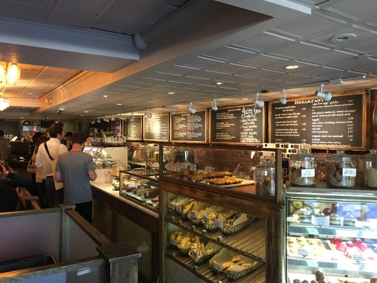
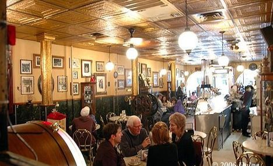
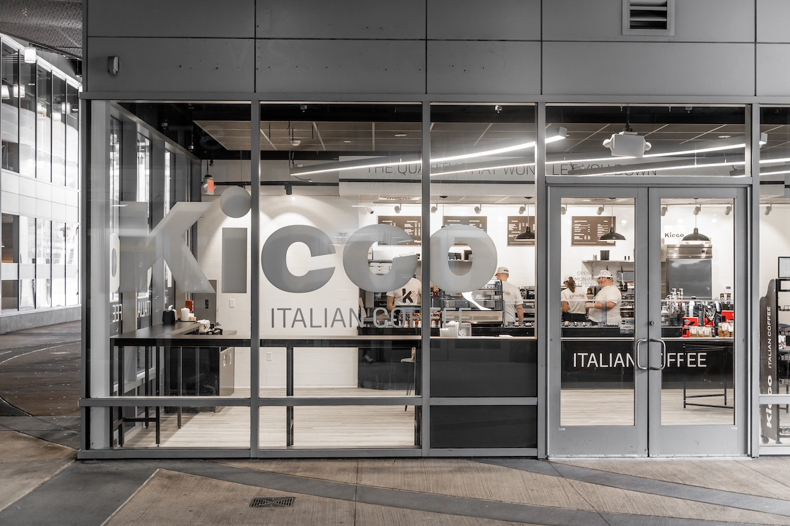

Thinking Cup- Located right in the heart of the North End, and is a boston classic! They are well known for their amazing pastries and comforting coffee and vibe. It is small inside but still a great cozy place to do work and chill out. The tables are decorated with old newspapers which adds a rustic and thrifty look.

Caffe Vittoria- This is a Boston Staple! When I think of classic local Boston coffee shops this place is top of the list! They are well known for making their capuccinos which are unique because they dust the top with cocoa powder adding a fun touch. The cafe is small but a great place to grab a capuccino with a friend!

Kicco- Brand new authentic italian coffee shop! I threw this one in the north end because it is close by however it is not actually in the North End. They serve coffee soft serve which is a must have! The owner's family grows and roasts their own coffee beans and exports them to the coffee shop. All of their pastries are expensive, however, they are all authentic and shipped directly from Italy! Their latte's were one of my favorites and they use a traditonal coffee extration method for the ultimate flavor!